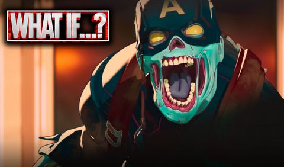
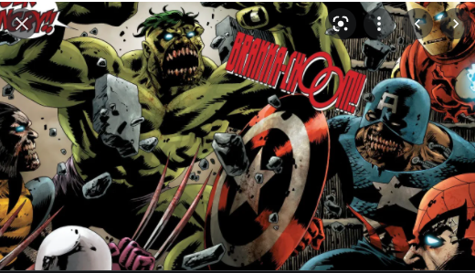

ACTIVIDAD 3
actividad 3
TEMA 2

MARVEL ZOMBIE 2
40 años después de que los zombis se marcharan de la Tierra, los poderosos-zombis cósmicos sistemáticamente han devorado toda vida en el universo Marvel, así como infectando al titán Thanos, a Fénix, a Shi'Ar, al Gladiador y al antiguo heraldo de Galactus el Señor del Fuego. Ellos deciden volver a la Tierra y reconstruir el portal interdimensional que Magneto destruyó hace cuarenta años; en su viaje a la Tierra, ellos devoran a Ego el Planeta Viviente para aliviar su hambre.
En la Tierra, el anciano T'Challa (alias Pantera Negra) gobierna a la gente que sobrevive en la nueva Wakanda, pero está en una lucha por el poder con los Acólitos, conducidos por Fabián Cortez. El nieto de Pantera Negra por casualidad descubre a Ojo de Halcón, quien se ha vuelto loco. Esa misma noche uno de los asesinos de Cortez ataca a Pantera Negra mientras dormía y casi lo desentraña, pero es salvado por la Avispa —quien ha dejado de ser un zombi, ella deliberadamente lo infecta para "salvarlo", dejándolo convertido en un zombi. Durante las décadas en los viajes interestelares hacia la Tierra, Spider-Man y Luke Cage gradualmente pierden su hambre y comienzan a actuar racionalmente otra vez. Cortez decide asesinar a Pantera Negra, a la Avispa y a Ojo de Halcón, pero la ejecución es retrasada por la llegada de los zombis cósmicos que han llegado a la Tierra. Giant Man desea comenzar un "programa de crianza" para crear más alimento humano, pero entonces la batalla comienza con Spider-Man y Luke Cage, sabiendo que ellos han cometido un error ahora que su hambre ha disminuido, para permitirles pensar racionalmente. Hulk vuelve a Bruce Banner y es capturado.
Los humanos crean una barrera impenetrable, con la mayor parte de los zombis cósmicos fuera. Dentro de la barrera Spider-Man con la ayuda de Luke Cage matan al Gladiador. Los humanos curan los daños que recibió Luke Cage y reemplazan los miembros perdidos de Spider-Man con la cibernética robótica. Spider-Man revela que otros zombis están buscando un transporte dimensional. Sabiendo que los zombis no se marcharán sin el dispositivo, los héroes se preparan para la siguiente batalla. Entonces es revelado que el hijo difunto T'Channa de la Pantera Negra ha sido reanimado con una parte del cerebro del Coronel América dentro de él. Durante la siguiente batalla, Iron Man altera el compuesto y combate a Forja, T'Channa y varios Acólitos. Tal como los zombis cósmicos ganan la batalla y se preparan al banquete con la gente restante, el Giant-Man está sorprendido de comprender que él ha perdido su hambre.
Giant Man convence a los zombis que su hambre desapareció, ellos son interrumpidos por un Hulk enfurecido y hambriento. Hulk destruye a varios de los zombis (Fénix, el Señor del Fuego, Ojo de Halcón y al Iron Man) como ellos intentan parar a Hulk de comer a la gente restante. Reynolds, que se ha enamorado de la Avispa y cree que ella está muerta, se ofrece a él mismo para ser devorado por Hulk para detener su cólera. Hulk consume a Reynolds y se transforma en Bruce Banner, que ruega ser muerto por los sobrevivientes para prevenir que Hulk continue con su destrucción, así que sus amigos zombificados cósmicos lo decapitan y minutos después celebran funerales de sus amigos zombificados como heroés de honor. La nueva Wakanda es reconstruida, y Cortez usa el portal para transportar lejos a los zombis restantes, teniendo la intención de obtener el control de la población para él.
MARVEL ZOMBIE
Su historia se desarrolla en una versión alternativa del universo Marvel, donde casi todos los superhéroes y supervillanos se han convertido en zombis, o en el alimento de estos. La serie fue publicada originalmente en 2005 por Marvel Cómics. La revista Time certifica a Marvel Zombies en el Top 10 Graphic Novels 2007El término despectivo Marvel Zombie no debe confundirse ni relacionarse con esta serie, ya que es un apelativo anterior que denomina a los seguidores más acérrimos de las historias y los personajes de Marvel Comics.
Estas versiones en forma de zombis aparecen por primera vez en la saga Ultimate Fantastic Four #21,22,23,30,31 y 32 (2005) creada por Mark Millar y Greg Land, en la que se explica cómo los personajes del Universo Marvel se han convertido en zombis en esta dimensión alternativa; dando pie a numerosas precuelas y variantes.
